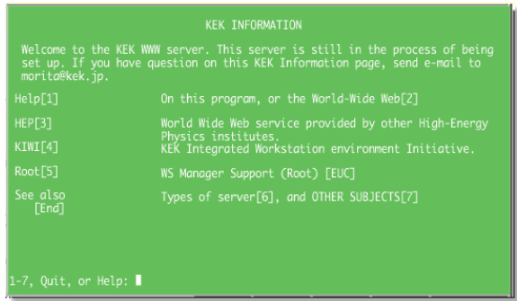

もし覚えていらっしゃれば、あわせて: 最初のHTMLは、Berners-Lee氏から書き方を直接教わったのでしょうか。それともCERNのWWWサイトに掲載されていたHTMLの説明、Example、既存ページなどを参考にされたのでしょうか。CERNでの作業環境を考えるうえでの補助的な確認として伺えればと思います。
ご確認のお願い
主に二つのことを伺えればと思っています
30年以上前のことですので、覚えていらっしゃる範囲だけで結構です。機種名やソフトウェア名が分からなくても、「文字だけだった」「ウインドウがあった」「これは違う」といった断片的な情報だけでも大変参考になります。
可能でしたら
まず下の二つについて、現在覚えていらっしゃることをご確認ください。その後に参考資料や復元候補をご覧いただくと、資料を見る前のご記憶と、資料を見て思い出されたことを分けて残せます。
1
CERN側
CERNでHTMLを作成したあとの表示について
2
KEK側
KEKのWWWサーバー自身でのブラウザ表示について
ここで伺いたいのはサーバーの管理画面やコンソール表示ではなく、WWWブラウザでKEKのページを表示したときの見た目です。そもそもそのような表示をしていなかった場合は、その旨だけでも重要な情報です。
補足
二つの質問に共通する確認
講演資料の「薄緑背景・白文字」の再現画面について

この画面を先にCERN側・KEK側のどちらかへ帰属させず、両方の候補で比較しています。
+
もし何かあれば
そのほか、当時について
資料
参考
当時の表示環境に関する参考資料
CERNによる初期WWW環境の復元、1992年前後のLine Mode Browser資料、KEK側のDECstation / ULTRIX / DECwindows資料、後年に残された「KEK INFORMATION」画面などをまとめています。
調査資料について
これまでに調べた内容は別ページにまとめています。今回、森田様に伺いたいことは、その中でも資料だけでは分からない二点を中心にしています。